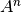
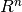
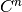
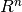
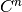
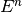

odl.space package¶
Submodules¶
odl.space.cartesian module¶
CPU implementations of n-dimensional Cartesian spaces.
This is a default implementation of  for an arbitrary set
 as well as the real and complex spaces  and
. The latter two each come in a basic version with vector
multiplication only and as metric, normed, Hilbert and Euclidean space
variants. The data is represented by NumPy arrays.
as well as the real and complex spaces  and
. The latter two each come in a basic version with vector
multiplication only and as metric, normed, Hilbert and Euclidean space
variants. The data is represented by NumPy arrays.
List of classes¶
| Class name | Direct Ancestors | Description |
|---|---|---|
| Ntuples | Set | Basic class of n-tuples where each entry is of the same type |
| Fn | EuclideanCn | HilbertRn with the standard inner (dot) product |
| Cn | Ntuples, Algebra | n-tuples of complex numbers with vector-vector multiplication |
| Rn | Cn | n-tuples of real numbers with vector-vector multiplication |
Space attributes and methods¶
The following tables summarize all attributes and methods of spaces in this module. Each table reflects the added features for the respective class.
`Ntuples` and subclasses:
Attributes:
| Name | Type | Description |
|---|---|---|
| dim | int | The number of entries per tuple |
| dtype | type | The data dype of each tuple entry |
Methods:
| Signature | Return type | Description |
|---|---|---|
| contains(other) | bool | Test if other is an element of this space. |
| element (inp=None) | <space type>.Vector | Create a space element. If inp is None, merely memory is allocated. Otherwise, the element is created from inp. |
| equals (other) | bool | Create a space element. If inp is None, merely memory is allocated. Otherwise, the element is created from inp. |
Magic methods:
| Signature | Provides syntax | Implementation |
|---|---|---|
| s.__eq__(other) | s == other | equals(other) |
| s.__ne__(other) | s != other | not equals(other) |
| s.__contains__(other) | other in s | contains(other) |
`Rn`/`Cn` and subclasses:
Attributes:
| Name | Type | Description |
|---|---|---|
| field | RealNumbers or ComplexNumbers | The field over which the space is defined |
Methods:
Vector attributes and methods¶
Similarly, the following tables incrementally summarize all attributes and methods of vectors in this module.
`Ntuples.Vector` and subclasses:
Attributes:
| Name | Type | Description |
|---|---|---|
| data | numpy.ndarray | The container for the vector entries |
| data_ptr | int | A raw memory pointer to the data container. Can be processed with the ctypes module in Python. |
| space | Set | The space to which this vector belongs |
Methods:
| Signature | Return type | Description |
|---|---|---|
| equals(other) | bool | Test if other is equal to this vector. |
| assign(other) | None | Copy the values of other to this vector. |
| copy() | <space type>.Vector | Create a (deep) copy of this vector. |
Magic methods:
| Signature | Provides syntax | Implementation |
|---|---|---|
| v.__eq__(other) | v == other | equals(other) |
| v.__ne__(other) | v != other | not equals(other) |
| v.__getitem__(indices) | v[indices] | by NumPy’s __getitem__ method |
| v.__setitem__(indices, values) | v[indices] = values | by NumPy’s __setitem__ method |
`Rn.Vector`/`Cn.Vector` and subclasses:
Attributes:
| Name | Type | Description |
|---|---|---|
| real | Rn.Vector | Real part of this vector as view (modifications affect the original vector) |
| imag | Rn.Vector | Imaginary part of this vector as view (modifications affect the original vector) |
Methods:
| Signature | Return type | Description |
|---|---|---|
| set_zero() | None | Set this vector’s values to zero |
Magic methods:
| Signature | Provides syntax | Implementation | ||
|---|---|---|---|---|
| v.__add__(other) | v + other | x = element(); lincomb(x, 1, v, 1, other) | ||
| v.__sub__(other) | v - other | x = element(); lincomb(x, 1, v, -1, other) | ||
| v.__mul__(other) | v * other | x = element(); lincomb(x, other, v) or x = v.copy(); multiply(other, x) | ||
| v.__rmul__(other) | other * v | __mul__(other) | ||
| v.__truediv__(other) | v / other | __mul__(1.0/other) | ||
| v.__div__(other) | v / other | same as __truediv__ | ||
| v.__iadd__(other) | v += other | lincomb(v, 1, v, 1, other) | ||
| v.__isub__(other) | v -= other | lincomb(v, 1, v, -1, other) | ||
| v.__imul__(other) | v *= other | lincomb(v, other, v) or multiply(other, v) | ||
| v.__itruediv__(other) | v /= other | __imul__(1.0/other) | ||
| v.__idiv__(other) | v /= other | same as __itruediv__ | ||
| v.__pos__() | +v | copy() | ||
| v.__neg__() | -v | x = element(); lincomb(x, -1, v) | ||
| norm() | float | Length of this vector and | ||
| inner(other) | float | Inner product of this vector with other | ||
-
class
odl.space.cartesian.Ntuples(dim, dtype)[source]¶ Bases:
odl.space.set.SetThe set of n-tuples of arbitrary type.
See the module documentation for attributes, methods etc.
-
class
Vector(space, data)[source]¶ Bases:
objectRepresentation of an Ntuples element.
See the module documentation for attributes, methods etc.
-
assign(other)[source]¶ Assign the values of other to this vector.
- other : Ntuples.Vector
- The values to be copied to this vector. other must be an element of this vector’s space.
None
>>> vec1 = Ntuples(3, int).element([1, 2, 3]) >>> vec2 = Ntuples(3, int).element([-1, 2, 0]) >>> vec1.assign(vec2) >>> vec1 Ntuples(3, int).element([-1, 2, 0])
-
copy()[source]¶ Create an identical (deep) copy of this vector.
- copy : Ntuples.Vector
- The deep copy
>>> vec1 = Ntuples(3, int).element([1, 2, 3]) >>> vec2 = vec1.copy() >>> vec2 Ntuples(3, int).element([1, 2, 3]) >>> vec1 == vec2 True >>> vec1 is vec2 False
-
data¶ The vector’s data representation, a numpy.ndarray.
>>> vec = Ntuples(3, int).element([1, 2, 3]) >>> vec.data array([1, 2, 3])
-
data_ptr¶ A raw pointer to the data container.
>>> import ctypes >>> vec = Ntuples(3, 'int32').element([1, 2, 3]) >>> arr_type = ctypes.c_int32 * 3 >>> buffer = arr_type.from_address(vec.data_ptr) >>> arr = np.frombuffer(buffer, dtype=int) >>> arr array([1, 2, 3])
In-place modification via pointer:
>>> arr[0] = 5 >>> vec Ntuples(3, int).element([5, 2, 3])
-
equals(other)[source]¶ Test if other is equal to this vector.
- equals : bool
- True if all entries of other are equal to this vector’s entries, False otherwise.
Space membership is not checked, hence vectors from different spaces can be equal.
>>> vec1 = Ntuples(3, int).element([1, 2, 3]) >>> vec2 = Ntuples(3, int).element([-1, 2, 0]) >>> vec1.equals(vec2) False >>> vec2 = Ntuples(3, int).element([1, 2, 3]) >>> vec1.equals(vec2) True >>> vec1 == vec2 # equivalent True
Equality can hold across spaces:
>>> vec2 = Ntuples(3, float).element([1, 2, 3]) >>> vec1.equals(vec2) and vec2.equals(vec1) True
-
space¶ The space this vector belongs to.
-
-
Ntuples.contains(other)[source]¶ Test if other is contained in this space.
- contains : bool
- True if other is an Ntuples.Vector instance of and other.space is equal to this space. False otherwise.
>>> long_3 = Ntuples(3, dtype='int64') >>> long_3.element() in long_3 True >>> long_3.element() in Ntuples(3, dtype='int32') False >>> long_3.element() in Ntuples(3, dtype='float64') False
-
Ntuples.dim¶ The dimension of this space.
>>> int_3 = Ntuples(3, dtype=int) >>> int_3.dim 3
-
Ntuples.dtype¶ The data type of each entry.
>>> int_3 = Ntuples(3, dtype='int64') >>> int_3.dtype dtype('int64')
-
Ntuples.element(inp=None)[source]¶ Create a new element.
- inp : array-like or scalar, optional
Input to initialize the new element.
If inp is None, an empty element is created with no guarantee of its state (memory allocation only).
If inp is a numpy.ndarray of shape (dim,) and the same data type as this space, the array is wrapped, not copied. Other array-like objects are copied (with broadcasting if necessary).
If a single value is given, it is copied to all entries.
- element : Ntuples.Vector
- The new element created (from inp).
This method preserves “array views” of correct size and type, see the examples below.
>>> strings3 = Ntuples(3, dtype='S1') # 1-char strings >>> x = strings3.element(['w', 'b', 'w']) >>> x Ntuples(3, dtype('S1')).element(['w', 'b', 'w']) >>> y = strings3.element() >>> y.assign(x) >>> y == x True >>> y = strings3.element('b'); print(y) ['b', 'b', 'b']
Array views are preserved:
>>> strings2 = Ntuples(2, dtype='S1') # 1-char strings >>> x = strings3.element(['w', 'b', 'w']) >>> y = strings2.element(x[::2]) # view into x >>> y[:] = 'x' >>> print(x) ['x', 'b', 'x']
-
Ntuples.equals(other)[source]¶ Test if other is equal to this space.
- equals : bool
- True if other is an instance of this space’s type with the same dim and dtype, otherwise False.
>>> int_3 = Ntuples(3, dtype=int) >>> int_3.equals(int_3) True
Equality is not identity:
>>> int_3a, int_3b = Ntuples(3, int), Ntuples(3, int) >>> int_3a.equals(int_3b) True >>> int_3a is int_3b False
>>> int_3, int_4 = Ntuples(3, int), Ntuples(4, int) >>> int_3.equals(int_4) False >>> int_3, str_3 = Ntuples(3, 'int'), Ntuples(3, 'string') >>> int_3.equals(str_3) False
Equality can also be checked with “==”:
>>> int_3, int_4 = Ntuples(3, int), Ntuples(4, int) >>> int_3 == int_3 True >>> int_3 == int_4 False >>> int_3 != int_4 True
-
class
-
class
odl.space.cartesian.Fn(dim, dtype, **kwargs)[source]¶ Bases:
odl.space.cartesian.Ntuples,odl.space.space.LinearSpaceThe complex vector space  with vector multiplication.
Its elements are represented as instances of the inner Cn.Vector class.
See the module documentation for attributes, methods etc.
-
class
Vector(space, data)[source]¶ Bases:
odl.space.cartesian.Vector,odl.space.space.VectorRepresentation of a Fn element.
See the module documentation for attributes, methods etc.
-
Fn.equals(other)[source]¶ Test if other is equal to this space.
- equals : bool
- True if other is an instance of this space’s type with the same dim and dtype, and identical distance function, otherwise False.
>>> from numpy.linalg import norm >>> def dist(x, y, ord): ... return norm(x - y, ord)
>>> from functools import partial >>> dist2 = partial(dist, ord=2) >>> c3 = Cn(3, dist=dist2) >>> c3_same = Cn(3, dist=dist2) >>> c3.equals(c3_same) True >>> c3 == c3_same # equivalent True
Different dist functions result in different spaces:
>>> dist1 = partial(dist, ord=1) >>> c3_1 = Cn(3, dist=dist1) >>> c3_2 = Cn(3, dist=dist2) >>> c3_1.equals(c3_2) False
Be careful with Lambdas - they result in non-identical function objects:
>>> c3_lambda1 = Cn(3, dist=lambda x, y: norm(x-y, ord=1)) >>> c3_lambda2 = Cn(3, dist=lambda x, y: norm(x-y, ord=1)) >>> c3_lambda1.equals(c3_lambda2) False
-
Fn.field¶ The field of , i.e. the complex numbers.
>>> c3 = Cn(3) >>> c3.field ComplexNumbers()
-
class
-
class
odl.space.cartesian.Cn(dim, dtype=<type 'numpy.complex128'>, **kwargs)[source]¶ Bases:
odl.space.cartesian.FnThe real vector space with vector multiplication.
Its elements are represented as instances of the inner Rn.Vector class.
See the module documentation for attributes, methods etc.
-
class
Vector(space, data)[source]¶ Bases:
odl.space.cartesian.VectorRepresentation of a Cn element.
See the module documentation for attributes, methods etc.
-
imag¶ The imaginary part of this vector.
- imag : Rn.Vector
- The imaginary part this vector as a vector in Rn
>>> c3 = Cn(3) >>> x = c3.element([5+1j, 3, 2-2j]) >>> x.imag Rn(3).element([1.0, 0.0, -2.0])
The Rn vector is really a view, so changes affect the original array:
>>> x.imag *= 2 >>> x Cn(3).element([(5+2j), (3+0j), (2-4j)])
-
real¶ The real part of this vector.
- real : Rn.Vector view
- The real part this vector as a vector in Rn
>>> c3 = Cn(3) >>> x = c3.element([5+1j, 3, 2-2j]) >>> x.real Rn(3).element([5.0, 3.0, 2.0])
The Rn vector is really a view, so changes affect the original array:
>>> x.real *= 2 >>> x Cn(3).element([(10+1j), (6+0j), (4-2j)])
-
-
class
-
class
odl.space.cartesian.Rn(dim, dtype=<type 'numpy.float64'>, **kwargs)[source]¶ Bases:
odl.space.cartesian.FnThe real vector space with vector multiplication.
Its elements are represented as instances of the inner Rn.Vector class.
See the module documentation for attributes, methods etc.
odl.space.cuda module¶
CUDA implementation of n-dimensional Cartesian spaces.
# TODO: document public interface
-
class
odl.space.cuda.CudaFn(dim, dtype=<type 'numpy.float32'>)[source]¶ Bases:
odl.space.space.LinearSpaceThe real space E^n, implemented in CUDA.
Requires the compiled ODL extension odlpp.
# TODO: document public interface
-
class
Vector(space, data)[source]¶ Bases:
odl.space.space.VectorAn E^n vector represented in CUDA.
# TODO: document public interface
-
data¶ The data of this vector.
None
- ptr : CudaFnVectorImpl
- Underlying cuda data representation
-
data_ptr¶ A raw pointer to the data of this vector.
None
- ptr : Int
- Pointer to the CUDA data of this vector
>>> Zn = CudaFn(3, int) >>> x = Zn.element([1, 2, 3]) >>> x CudaFn(3, int).element([1, 2, 3]) >>> y = Zn.element(data_ptr=x.data_ptr) >>> y CudaFn(3, int).element([1, 2, 3])
In-place modification via pointer:
>>> y[0] = 5 >>> x CudaFn(3, int).element([5, 2, 3])
-
itemsize¶ The size in bytes of the underlying element type.
None
- itemsize : Int
- Size in bytes of type
-
-
CudaFn.dim¶ The dimension of this space.
None
Integer
>>> rn = CudaFn(3) >>> rn.dim 3
-
CudaFn.dtypes= {dtype('uint64'): <class 'odlpp.odlpp_cuda.CudaVectorUInt64'>, dtype('int8'): <class 'odlpp.odlpp_cuda.CudaVectorInt8'>, dtype('uint8'): <class 'odlpp.odlpp_cuda.CudaVectorUInt8'>, dtype('int16'): <class 'odlpp.odlpp_cuda.CudaVectorInt16'>, dtype('float64'): <class 'odlpp.odlpp_cuda.CudaVectorFloat64'>, dtype('uint16'): <class 'odlpp.odlpp_cuda.CudaVectorUInt16'>, dtype('uint32'): <class 'odlpp.odlpp_cuda.CudaVectorUInt32'>, dtype('int32'): <class 'odlpp.odlpp_cuda.CudaVectorInt32'>, dtype('float32'): <class 'odlpp.odlpp_cuda.CudaVectorFloat32'>, dtype('int64'): <class 'odlpp.odlpp_cuda.CudaVectorInt64'>}¶
-
CudaFn.element(inp=None, data_ptr=None)[source]¶ Create an element from given data or from scratch.
TODO: write up properly
inp : array-like, optional
The method has two call patterns, the first is:
- *args : numpy.ndarray
- Array that will be copied to the GPU. Data is not modified or bound. The shape of the array must be (n,)
**kwargs : None
The second pattern is to create a new numpy array which will then be copied to the GPU. In this case
*args : Options for numpy.array constructor **kwargs : Options for numpy.array constructor
CudaFn.Vector instance
>>> rn = CudaFn(3) >>> x = rn.element(np.array([1, 2, 3])) >>> x CudaFn(3).element([1.0, 2.0, 3.0]) >>> y = rn.element([1, 2, 3]) >>> y CudaFn(3).element([1.0, 2.0, 3.0])
-
CudaFn.equals(other)[source]¶ Check if other is a CudaFn instance of the same dimension.
- other : any object
- The object to check for equality
- eq : boolean
- True if equal, else false
Comparing with self:
>>> r3 = CudaFn(3) >>> r3.equals(r3) True >>> r3a, r3b = CudaFn(3), CudaFn(3) >>> r3a.equals(r3b) True
False when comparing to other dimension Rn:
>>> r3, r4 = CudaFn(3), CudaFn(4) >>> r3.equals(r4) False
We also support operators ‘==’ and ‘!=’:
>>> r3, r4 = CudaFn(3), CudaFn(4) >>> r3 == r3 True >>> r3 == r4 False >>> r3 != r4 True
-
CudaFn.field¶ The underlying field of R^n is the set of real numbers.
None
RealNumbers instance
>>> rn = CudaFn(3, np.float32) >>> rn.field RealNumbers()
-
class
-
class
odl.space.cuda.CudaRn(dim)[source]¶ Bases:
odl.space.cuda.CudaFnThe real space , implemented in CUDA.
Requires the compiled ODL extension odlpp.
# TODO: document public interface
odl.space.function module¶
Support for functionspaces, such as L2.
-
class
odl.space.function.FunctionSpace(domain, field=RealNumbers())[source]¶ Bases:
odl.space.space.LinearSpaceThe space of scalar valued functions on some domain
- domain : Set
- The set the functions take values from
- field : {RealNumbers, ComplexNumbers}, optional
- The field that the functions map values into. Since FunctionSpace is a LinearSpace, this is also the set of scalars for this space.
-
class
Vector(space, function)[source]¶ Bases:
odl.operator.operator._DefaultApplyOperator,odl.space.space.Vector,odl.operator.operator.OperatorA Vector in a FunctionSpace
FunctionSpace-Vectors are themselves also Functionals, and inherit a large set of features from them.
- space : FunctionSpace
- Instance of FunctionSpace this vector lives in
- function : Function from space.domain to space.field
- The function that should be converted/reinterpreted as a vector.
-
domain¶ The range of this Vector (when viewed as a functional)
-
range¶ The range of this Vector (when viewed as a functional)
The range is the same as the field of the vectors space
-
FunctionSpace.element(funct=None)[source]¶ Creates an element in FunctionSpace
- funct : Function from self.domain to self.field
- The function that should be converted/reinterpreted as a vector.
FunctionSpace.Vector instance
>>> R = RealNumbers() >>> space = FunctionSpace(R, R) >>> x = space.element(lambda t: t**2) >>> x(1) 1.0 >>> x(3) 9.0
-
FunctionSpace.equals(other)[source]¶ Verify that other is a FunctionSpace with the same domain and field
-
FunctionSpace.field¶ The field that the functions map values into.
Since FunctionSpace is a LinearSpace, this is also the set of scalars for this space.
-
class
odl.space.function.L2(domain, field=RealNumbers())[source]¶ Bases:
odl.space.function.FunctionSpaceThe space of square integrable functions on some domain
-
class
Vector(space, function)[source]¶ Bases:
odl.space.function.VectorA Vector in a L2-space
FunctionSpace-Vectors are themselves also Functionals, and inherit a large set of features from them.
- space : FunctionSpace
- Instance of FunctionSpace this vector lives in
- function : Function from space.domain to space.field
- The function that should be converted/reinterpreted as a vector.
-
class
odl.space.product module¶
Cartesian products of `LinearSpace`s.
TODO: document public interface
-
class
odl.space.product.ProductSpace(*spaces, **kwargs)[source]¶ Bases:
odl.space.space.LinearSpaceThe Cartesian product of N linear spaces.
The product X1 x ... x XN is itself a linear space, where the linear combination is defined component-wise.
TODO: document public interface
-
ProductSpace.element(*args, **kwargs)[source]¶ Create an element in the product space.
The method has three call patterns, the first is:
- args : None
- Create a new vector from scratch.
The second is to wrap existing vectors:
- args : tuple of `LinearSpace.Vector`s
- A tuple of vectors in the underlying spaces. This will simply wrap the Vectors (not copy).
The third pattern is to create a new Vector from scratch, in this case
args : tuple of array-like objects
ProductSpace.Vector instance
>>> from odl.space.cartesian import Rn >>> r2, r3 = Rn(2), Rn(3) >>> vec_2, vec_3 = r2.element(), r3.element() >>> r2x3 = ProductSpace(r2, r3) >>> vec_2x3 = r2x3.element() >>> vec_2.space == vec_2x3[0].space True >>> vec_3.space == vec_2x3[1].space True
Creates an element in the product space >>> from odl.space.cartesian import Rn >>> r2, r3 = Rn(2), Rn(3) >>> prod = ProductSpace(r2, r3) >>> x2 = r2.element([1, 2]) >>> x3 = r3.element([1, 2, 3]) >>> x = prod.element(x2, x3) >>> print(x) {[1.0, 2.0], [1.0, 2.0, 3.0]}
-
ProductSpace.equals(other)[source]¶ Check if the other is the same product space.
- other : object
- The object to be compared
- equal : boolean
- True if other is a ProductSpace instance, has the same length and the same factors. False otherwise.
>>> from odl.space.cartesian import Rn >>> r2, r3 = Rn(2), Rn(3) >>> rn, rm = Rn(2), Rn(3) >>> r2x3, rnxm = ProductSpace(r2, r3), ProductSpace(rn, rm) >>> r2x3.equals(rnxm) True >>> r3x2 = ProductSpace(r3, r2) >>> r2x3.equals(r3x2) False >>> r5 = ProductSpace(*[Rn(1)]*5) >>> r2x3.equals(r5) False >>> r5 = Rn(5) >>> r2x3.equals(r5) False
-
ProductSpace.field¶ The common underlying field of all factors.
-
ProductSpace.spaces¶ A tuple containing all spaces.
-
ProductSpace.zero()[source]¶ Create the zero vector of the product space.
The i:th component of the product space zero vector is the zero vector of the i:th space in the product.
None
- zero : ProducSpace.Vector
- The zero vector in the product space
>>> from odl.space.cartesian import Rn >>> r2, r3 = Rn(2), Rn(3) >>> zero_2, zero_3 = r2.zero(), r3.zero() >>> r2x3 = ProductSpace(r2, r3) >>> zero_2x3 = r2x3.zero() >>> zero_2 == zero_2x3[0] True >>> zero_3 == zero_2x3[1] True
-
-
odl.space.product.powerspace(base, power, **kwargs)[source]¶ Creates a power space X^N = X x ... x X
Selects the ‘most powerful’ space possible, i.e. if all spaces are HilbertSpace instances, a HilbertProductSpace instance is returned.
- base : <Which>Space instance
- <Which> is either Hilbert, Normed, Metric or Linear
- power : int
- The number of factors in the product
- kwargs : {‘ord’, ‘weights’, ‘prod_norm’}
- ‘ord’ : float, optional
- Order of the product distance/norm, i.e. dist(x, y) = np.linalg.norm(x-y, ord=ord) norm(x) = np.linalg.norm(x, ord=ord) If used, forces the space to not be a hilbert space. Default: 2.0
- ‘weights’ : array-like, optional, only usable with ‘ord’ option.
- Array of weights, same size as number of space components. All weights must be positive. It is multiplied with the tuple of distances before applying the Rn norm or ‘prod_norm’. Default: (1.0,...,1.0)
- ‘prod_norm’ : callable, optional
Function that should be applied to the array of distances/norms If used, forces the space to not be a hilbert space. Defaults if applicable:
dist = np.linalg.norm(x-y, ord=ord) norm = np.linalg.norm(x, ord=ord)
- prodspace : <Which>ProductSpace instance
- <Which> is either Hilbert, Normed, Metric or Linear
powerspace(Rn(1), 2) is mathematically equivalent to Rn(2), however the latter is usually more efficient numerically.
ProductSpace
-
odl.space.product.productspace(*spaces, **kwargs)[source]¶ Creates a product space X1 x ... x XN
Selects the ‘most powerful’ space possible, i.e. if all spaces are HilbertSpace instances, a HilbertProductSpace instance is returned.
- spaces : <Which>Space instances
- <Which> is either Hilbert, Normed, Metric or Linear
- kwargs : {‘ord’, ‘weights’, ‘prod_norm’}
- ‘ord’ : float, optional
- Order of the product distance/norm, i.e. dist(x, y) = np.linalg.norm(x-y, ord=ord) norm(x) = np.linalg.norm(x, ord=ord) If used, forces the space to not be a Hilbert space. Default: 2.0
- ‘weights’ : array-like, optional, only usable with the
- ‘ord’ option.
Array of weights, same size as number of space components. All weights must be positive. It is multiplied with the tuple of distances before applying the Rn norm or ‘prod_norm’. Default: (1.0,...,1.0)
- ‘prod_norm’ : callable, optional
Function that should be applied to the array of distances/norms. If used, forces the space to not be a Hilbert space. Defaults if applicable:
dist = np.linalg.norm(x-y, ord=ord) norm = np.linalg.norm(x, ord=ord) inner = np.vdot(x,y)
- prodspace : <Which>ProductSpace instance
- <Which> is either Hilbert, Normed, Metric or Linear
productspace(Rn(1), Rn(1)) is mathematically equivalent to Rn(2), however the latter is usually more efficient numerically.
ProductSpace, MetricProductSpace, NormedProductSpace, HilbertProductSpace
odl.space.sequence module¶
Examples of sequence spaces, function spaces defined on the integers.
-
class
odl.space.sequence.SequenceSpace[source]¶ Bases:
odl.space.function.FunctionSpaceThe space of sequences
-
class
odl.space.sequence.TruncationDiscretization(parent, n)[source]¶ Bases:
odl.space.cartesian.RnTruncation discretization of the integers Represents vectors by R^n elements
odl.space.set module¶
General set structure as well as implementations of the most common sets.
-
class
odl.space.set.CartesianProduct(*sets)[source]¶ Bases:
odl.space.set.Set-
sets¶ The factors (sets) as a tuple.
-
-
class
odl.space.set.ComplexNumbers[source]¶ Bases:
odl.space.set.SetThe set of complex numbers.
-
class
odl.space.set.Cube(begin, end)[source]¶ Bases:
odl.space.set.IntervalProd
-
class
odl.space.set.EmptySet[source]¶ Bases:
odl.space.set.SetThe empty set.
-
class
odl.space.set.Integers[source]¶ Bases:
odl.space.set.SetThe set of integers.
-
class
odl.space.set.Interval(begin, end)[source]¶ Bases:
odl.space.set.IntervalProdThe set of real numbers in the interval [begin, end]
-
length¶ The length of this interval
-
-
class
odl.space.set.IntervalProd(begin, end)[source]¶ Bases:
odl.space.set.SetAn n-dimensional rectangular box.
An IntervalProd is a Cartesian product of N intervals, i.e. an N-dimensional rectangular box aligned with the coordinate axes as a subset of R^n.
Name Type Description begin numpy.ndarray or float (Vector of) leftmost interval point(s) end numpy.ndarray or float (Vector of) rightmost interval point(s) dim int Number of axes truedim int Number of non-degenerate axes, i.e. where begin != end sizes numpy.ndarray or float (Vector of) interval length(s) volume float dim-dimensional measure midpoint numpy.ndarray or float Vector of interval midpoint(s) Signature Return type Description equals(other, tol=0.0) boolean Test if other is equal to this interval product. contains(other, tol=0.0) boolean Test if other is contained in this interval product. measure(dim=None) float Return the dim-dimensional measure of this interval product. dist(point, ord=2.0) float Return the distance in ord-norm between point and this interval product. collapse(indcs, vals) IntervalProd Return the interval product where the intervals at indcs are collapsed to single values vals. insert(other, index) IntervalProd Return the interval product wher other has been before index. corners(order=’C’) numpy.ndarray Return the corner points of this interval product in a single array. uniform_sampling( num_nodes, as_midp=False) RegularGrid Create a regular grid by sampling this interval product at num_nodes equidistant nodes (per axis). RegularGrid is defined in odl.discr.grid.
-
begin¶ The left interval boundary/boundaries.
-
collapse(indcs, values)[source]¶ Partly collapse the interval product to single values.
Note that no changes are made in-place.
- indcs : int or tuple of ints
- The indices of the dimensions along which to collapse
- values : float or array-like
- The values to which to collapse. Must have the same lenght as ‘indcs’. Values must lie within the interval boundaries.
The collapsed IntervalProd
>>> b, e = [-1, 0, 2], [-0.5, 1, 3] >>> rbox = IntervalProd(b, e) >>> rbox.collapse(1, 0) IntervalProd([-1.0, 0.0, 2.0], [-0.5, 0.0, 3.0]) >>> rbox.collapse([1, 2], [0, 2.5]) IntervalProd([-1.0, 0.0, 2.5], [-0.5, 0.0, 2.5]) >>> rbox.collapse([1, 2], [0, 3.5]) Traceback (most recent call last): ... ValueError: 'values' not within interval boundaries ([3.5] > [3.0])
-
contains(point, tol=0.0)[source]¶ Test if a point is contained.
- point : array-like or float
- The point to be tested. Its length must be equal to the set’s dimension. In the 1d case, ‘point’ can be given as a float.
- tol : float, optional
- The maximum allowed distance in ‘inf’-norm between the point and the set. Default: 0.0
>>> from math import sqrt >>> rbox = IntervalProd([-1, 0, 2], [-0.5, 0, 3]) >>> rbox.contains([-1 + sqrt(0.5)**2, 0., 2.9]) # Num error False >>> rbox.contains([-1 + sqrt(0.5)**2, 0., 2.9], tol=1e-15) True
-
contains_grid(grid, tol=0.0)[source]¶ Test if a grid is contained.
- grid : TensorGrid
- The grid to be tested
- tol : float, optional
- The maximum allowed distance in ‘inf’-norm between the grid points and the set. Default: 0.0
>>> from odl.discr.grid import TensorGrid >>> rbox = IntervalProd([-1, 0], [-0.5, 0]) >>> grid = TensorGrid([-1, -0.8, -0.5], [0]) >>> rbox.contains_grid(grid) True >>> grid = TensorGrid([-1, -0.8, -0.5], [0, 1]) >>> rbox.contains_grid(grid) False >>> grid = TensorGrid([-1, -0.8, -0.4], [0]) >>> rbox.contains_grid(grid) False >>> rbox.contains_grid(grid, tol=0.1) True
-
corners(order=u'C')[source]¶ The corner points in a single array.
- order : ‘C’ or ‘F’
- The ordering of the axes in which the corners appear in the output.
- out : numpy.ndarray
- The size of the array is 2^m x dim, where m is the number of non-degenerate axes, i.e. the corners are stored as rows.
>>> rbox = IntervalProd([-1, 2, 0], [-0.5, 3, 0.5]) >>> rbox.corners() array([[-1. , 2. , 0. ], [-1. , 2. , 0.5], [-1. , 3. , 0. ], [-1. , 3. , 0.5], [-0.5, 2. , 0. ], [-0.5, 2. , 0.5], [-0.5, 3. , 0. ], [-0.5, 3. , 0.5]]) >>> rbox.corners(order='F') array([[-1. , 2. , 0. ], [-0.5, 2. , 0. ], [-1. , 3. , 0. ], [-0.5, 3. , 0. ], [-1. , 2. , 0.5], [-0.5, 2. , 0.5], [-1. , 3. , 0.5], [-0.5, 3. , 0.5]])
-
dim¶ The number of intervals in the product.
-
dist(point, ord=2.0)[source]¶ Calculate the distance to a point.
- point : array-like or float
- The point. Its length must be equal to the set’s dimension. In the 1d case, ‘point’ can be given as a float.
- ord : non-zero int or float(‘inf’), optional
- The order of the norm (see numpy.linalg.norm). Default: 2.0
>>> b, e = [-1, 0, 2], [-0.5, 0, 3] >>> rbox = IntervalProd(b, e) >>> rbox.dist([-5, 3, 2]) 5.0 >>> rbox.dist([-5, 3, 2], ord=float('inf')) 4.0
-
end¶ The right interval boundary/boundaries.
-
equals(other, tol=0.0)[source]¶ Test if another set is equal to the current one.
- other : object
- The object to be tested.
- tol : float, optional
- The maximum allowed difference in ‘inf’-norm between the interval endpoints. Default: 0.0
>>> from math import sqrt >>> rbox1 = IntervalProd(0, 0.5) >>> rbox2 = IntervalProd(0, sqrt(0.5)**2) >>> rbox1.equals(rbox2) # Num error False >>> rbox1 == rbox2 # Equivalent to rbox1.equals(rbox2) False >>> rbox1.equals(rbox2, tol=1e-15) True
-
insert(other, index)[source]¶ Insert another IntervalProd before the given index.
The given IntervalProd (dim=m) is inserted into the current one (dim=n) before the given index, resulting in a new IntervalProd of dimension n+m. Note that no changes are made in-place.
- other : IntervalProd, float or array-like
- The IntervalProd to be inserted. A float or array a is treated as an IntervalProd(a, a).
- index : int
- The index of the dimension before which ‘other’ is to be inserted. Must fulfill 0 <= index <= dim.
The enlarged IntervalProd
>>> rbox = IntervalProd([-1, 2], [-0.5, 3]) >>> rbox2 = IntervalProd([0, 0], [1, 0]) >>> rbox.insert(rbox2, 1) IntervalProd([-1.0, 0.0, 0.0, 2.0], [-0.5, 1.0, 0.0, 3.0]) >>> rbox.insert([-1.0, 0.0], 2) IntervalProd([-1.0, 2.0, -1.0, 0.0], [-0.5, 3.0, -1.0, 0.0]) >>> rbox.insert(0, 1).squeeze().equals(rbox) True
-
measure(dim=None)[source]¶ The (Lebesgue) measure of the IntervalProd instance.
- dim : int, optional
- The dimension of the measure to apply. Default: truedim
>>> b, e = [-1, 2.5, 0], [-0.5, 10, 0] >>> rbox = IntervalProd(b, e) >>> rbox.measure() 3.75 >>> rbox.measure(dim=3) 0.0 >>> rbox.measure(dim=3) == rbox.volume True >>> rbox.measure(dim=1) inf >>> rbox.measure() == rbox.squeeze().volume True
-
midpoint¶ The midpoint of the interval product.
If dim == 1, a float is returned, otherwise an array.
-
size¶ The interval length per axis.
-
squeeze()[source]¶ Remove the degenerate dimensions.
Note that no changes are made in-place.
The squeezed IntervalProd
>>> b, e = [-1, 0, 2], [-0.5, 1, 3] >>> rbox = IntervalProd(b, e) >>> rbox.collapse(1, 0).squeeze() IntervalProd([-1.0, 2.0], [-0.5, 3.0]) >>> rbox.collapse([1, 2], [0, 2.5]).squeeze() IntervalProd([-1.0], [-0.5]) >>> rbox.collapse([0, 1, 2], [-1, 0, 2.5]).squeeze() IntervalProd([], [])
-
truedim¶ The number of non-degenerate (zero-length) intervals.
-
uniform_sampling(num_nodes, as_midp=False)[source]¶ Produce equispaced nodes, a RegularGrid.
- num_nodes : int or tuple of int’s
- The number of nodes per axis. For dim=1, a single int may be given. All entries must be positive. Entries corresponding to degenerate axes must be equal to 1.
- as_midp : boolean, optional
- If True, the midpoints of an interval partition will be returned, which excludes the endpoints. Otherwise, equispaced nodes including the endpoints are generated. Note that the resulting strides are different. Default: False.
sampling : grid.RegularGrid
>>> rbox = IntervalProd([-1, 2], [-0.5, 3]) >>> grid = rbox.uniform_sampling([2, 5]) >>> grid.coord_vectors (array([-1. , -0.5]), array([ 2. , 2.25, 2.5 , 2.75, 3. ])) >>> grid = rbox.uniform_sampling([2, 5], as_midp=True) >>> grid.coord_vectors (array([-0.875, -0.625]), array([ 2.1, 2.3, 2.5, 2.7, 2.9]))
-
volume¶ The ‘dim’-dimensional volume of this IntervalProd.
-
-
class
odl.space.set.RealNumbers[source]¶ Bases:
odl.space.set.SetThe set of real numbers.
-
class
odl.space.set.Rectangle(begin, end)[source]¶ Bases:
odl.space.set.IntervalProd-
area¶ The area of this triangle
-
odl.space.space module¶
Abstract vector spaces.
The classes in this module represent abstract mathematical concepts of vector spaces. They cannot be used directly but are rather intended to be subclassed by concrete space implementations. The spaces provide default implementations of the most important vector space operations. See the documentation of the respective classes for more details.
Class descriptions¶
| Class name | Direct ancestors | Description |
|---|---|---|
| LinearSpace | Set | Abstract class. A vector space over a field (real or complex numbers) defining a vector-vector addition and a scalar-vector multiplication with certain properties. See the article `Vector space`_ on Wikipedia for further information. |
| MetricSpace | LinearSpace | Abstract class. A vector space with a metric, i.e. a dist function measuring the distance between two vectors. |
| NormedSpace | MetricSpace | Abstract class. A metric space with a norm function measuring the length a vector. The dist function is induced by the norm as dist(x, y) = norm(x - y). |
| HilbertSpace | NormedSpace | Abstract class. A normed space with an inner product measuring angles between vectors with unit length. The norm function is induced by the inner product by the according to norm(x) = inner(x, x). |
| Algebra | LinearSpace | Abstract class. A linear space with a vector-vector multiplication under which the space is closed. See the Algebra article on Wikipedia for further information. (Note that we assume commutativity and unitality.) |
See also¶
The Set class is defined in odl.space.set.
-
class
odl.space.space.LinearSpace[source]¶ Bases:
odl.space.set.SetAbstract linear vector space.
Its elements are represented as instances of the inner LinearSpace.Vector class.
The concept of linear vector spaces in ODL is largely inspired by the Rice Vector Library (RVL).
The abstract LinearSpace class is intended for quick prototyping. It has a number of abstract methods which must be overridden by a subclass. On the other hand, it provides automatic error checking and numerous attributes and methods for convenience.
In the following, the abstract methods are explained in detail.
This public method is the factory for the inner LinearSpace.Vector class. It creates a new element of the space, either from scratch or from an existing data container. In the simplest possible case, it just delegates the construction to the Vector class.
If no data is provided, the new element is merely allocated, not initialized, thus it can contain any value.
- Parameters:
- inp : object, optional
- A container for values for the element initialization
- Returns:
- element : LinearSpace.Vector
- The new vector.
This private method is the raw implementation (i.e. no error checking) of the linear combination z <– a * x + b * y. _lincomb and its public counterpart lincomb are used to cover a range of convenience functions, see below.
- Parameters:
- z : LinearSpace.Vector
- Element to which the result of the computation is written
- a : LinearSpace.field element
- Multiplicative scalar factor for input vector x
- x : LinearSpace.Vector
- First input vector
- b : LinearSpace.field element
- Multiplicative scalar factor for input vector y
- y : LinearSpace.Vector
- Second input vector
Returns: None
- Requirements:
- Aliasing of x, y and z must be allowed.
- The input vectors x and y must not be modified.
- The initial state of the output vector z must not influence the result.
The public attribute determining the type of scalars which underlie the space. Can be either RealNumbers or ComplexNumbers (see odl.space.set).
Must be implemented as a @property to make it immutable.
LinearSpace inherits this abstract method from Set. Its purpose is to check two LinearSpace instances for equality.
- Parameters:
- other : object
- The object to compare to.
- Returns:
- equals : boolean
- True if other is the same LinearSpace, False otherwise.
A raw (not type-checking) private method measuring the distance between two vectors x and y.
A space with a distance is called a Metric Space.
- Parameters:
- x : object
- The first vector
- y : object
- The second vector
- Returns:
- distance : RealNumber
- The distance between x and y, measured in the space’s metric
- Requirements:
- _dist(x, y) == _dist(y, x)
- _dist(x, y) <= _dist(x, z) + _dist(z, y)
- _dist(x, y) >= 0
- _dist(x, y) == 0 (approx.) if and only if x == y (approx.)
A raw (not type-checking) private method measuring the length of a space element x.
A space with a norm is called a Normed Space.
- Parameters:
- x : object
- The vector to measure
- Returns:
- norm : RealNumber
- The length of x as measured in the space’s metric
- Requirements:
- _norm(s * x) = |s| * _norm(x) for any scalar s
- _norm(x + y) <= _norm(x) + _norm(y)
- _norm(x) >= 0
- _norm(x) == 0 (approx.) if and only if x == 0 (approx.)
A Normed Space is a Metric Space with the distance function _dist(x, y) = _norm(x - y).
A raw (not type-checking) private method calculating the inner product of two space elements x and y.
- Parameters:
- x : object
- The first vector
- y : object
- The second vector
- Returns:
- inner : space.field element
- The inner product of x and y
- Requirements:
- _inner(x, y) == _inner(y, x)^* with ‘*’ = complex conjugation
- _inner(s * x, y) == s * _inner(x, y) for s scalar
- _inner(x + z, y) == _inner(x, y) + _inner(z, y)
- _inner(x, x) == 0 (approx.) if and only if x == 0 (approx.)
A HilbertSpace is a NormedSpace with the norm function _norm(x) = sqrt(_inner(x, x)), and in consequence also a MetricSpace with the distance function _dist(x, y) = _norm(x - y).
A raw (not type-checking) private method multiplying two vectors x and y.
- Parameters:
- x : object
- First vector
- y : object
- Second vector, stores the final result
Returns: None
- Requirements:
The above conditions on the multiplication make Algebra a unital commutative algebra in the mathematical sense.
LinearSpace provides several default methods for convenience which use the abstract methods above. A subclass may override them with own implementations.
Signature Return type Description lincomb(z, a, x, b, y) None Linear combination z <– a * x + b * y. Like _lincomb(), but with type checks. zero() LinearSpace.Vector Create a zero vector by first issuing x = element() and then _lincomb(x, 0, x, 0, x) Metric Space methods Normed Space methods norm(x) float Length of a space element. Like _norm(), but with type checks. Hilbert Space methods inner(x, y) field element Inner product of two space elements. Like _inner(), but with type checks. Algebra methods multiply(x, y) None Multiplication of two space elements. Like _multiply(), but with type checks. Signature Provides syntax Implementation __eq__(other) self == other equals(other) __ne__(other) self != other not equals(other) __contains__(other) other in self contains(other) See Wikipedia’s `Vector space`_ article for a mathematical overview.
-
class
Vector(space)[source]¶ Bases:
future.types.newobject.newobjectAbstract LinearSpace element.
Not intended for creation of vectors, use the space’s element() method instead.
Name Type Description space LinearSpace The space to which this vector belongs Signature Return type Description assign(other) None Copy the values of other to this vector. copy() LinearSpace.Vector Create a (deep) copy of this vector. lincomb(a, x, b=None, y=None) None Linear combination a * x + b * y, stored in this vector. set_zero() None Multiply this vector by zero. Metric space methods equals(other) boolean Test if other is equal to this vector. Implemented as dist(other) == 0. Signature Provides syntax Implementation __iadd__(other) self += other lincomb(self, 1, self, 1, other) __isub__(other) self -= other lincomb(self, 1, self, -1, other) __imul__(scalar) self *= scalar lincomb(self, scalar, self) __itruediv__ (scalar) self /= scalar __imul__(1.0 / scalar) __idiv__(scalar) self /= scalar same as __itruediv__ __add__(other) self + other x = element(); lincomb(x, 1, self, 1, other) __sub__(other) self - other x = element(); lincomb(x, 1, self, -1, other) __mul__(scalar) self * scalar x = element(); lincomb(x, scalar, self) __rmul__(scalar) scalar * self __mul__(scalar) __truediv__ (scalar) self /= scalar __mul__(1.0 / scalar) __div__(scalar) self /= scalar same as __truediv__ __pos__() +self copy() __neg__() -self x = element(); lincomb(x, -1, self) Metric space methods __eq__(other) self == other equals(other) __ne__(other) self != other not equals(other) Note that lincomb and element refer to LinearSpace methods.
-
equals(other)[source]¶ Test two vectors for equality.
Two vectors are equal if their distance is 0
- other : MetricSpace.Vector
- Vector in this space.
- equals : boolean
- True if the vectors are equal, else false.
Equality is very sensitive to numerical errors, thus any operations on a vector should be expected to break equality testing.
>>> from odl.space.cartesian import Rn >>> import numpy as np >>> X = Rn(1, norm=np.linalg.norm) >>> x = X.element([0.1]) >>> x == x True >>> y = X.element([0.1]) >>> x == y True >>> z = X.element([0.3]) >>> x+x+x == z False
-
lincomb(a, x, b=None, y=None)[source]¶ Assign a linear combination to this vector.
Implemented as space.lincomb(self, a, x, b, y).
-
space¶ The space this vector belongs to.
-
-
LinearSpace.contains(other)[source]¶ Test an object for membership in space.
- other : object
- The object to test for membership
- contains : bool
- True if other is a LinearSpace.Vector instance and other.space is equal to this space.
This is the strict default where spaces must be equal. Subclasses may choose to implement a less strict check.
-
LinearSpace.dist(x, y)[source]¶ Calculate the distance between two vectors.
- x : MetricSpace.Vector
- The first element
- y : MetricSpace.Vector
- The second element
- dist : RealNumber
- Distance between vectors
-
LinearSpace.element(inp=None)[source]¶ Create an element from inp or from scratch.
If called without inp argument, an arbitrary element in the space is generated without guarantee of its state.
- inp : object, optional
- The input data from which to create the element
- element : LinearSpace.Vector
- A vector in this space
-
LinearSpace.field¶ The field of the vector space.
-
LinearSpace.lincomb(z, a, x, b=None, y=None)[source]¶ Linear combination of vectors.
Calculates
z = a*x or if b and y are given z = a*x + b*y
with error checking of types.
- z : Vector
- The Vector that the result should be written to.
- a : Scalar in the field of this space
- Scalar to multiply x with.
- x : Vector
- The first of the summands
- b : Scalar, optional
- Scalar to multiply y with.
- y : Vector, optional
- The second of the summands
None
Some notes and examples
The vectors z, x and y may be aligned, thus a call
space.lincomb(x, 2, x, 3.14, x)
is (mathematically) equivalent to
x = x * (1 + 2 + 3.14)
Module contents¶
Core Spaces and set support.
Abstract and concrete sets (module ‘set’)¶
| Name | Description |
|---|---|
| Set | Base class for mathematical sets |
| ComplexNumbers | Set of complex numbers |
| RealNumbers | Set of real numbers |
| Integers | Set of integers |
| IntervalProd | Cartesian product of n intervals |
| Interval | IntervalProd specialization in 1-D |
| Rectangle | IntervalProd specialization in 2-D |
| Cube | IntervalProd specialization in 3-D |
Abstract vector spaces (modules ‘space’ and ‘product’)¶
General Spaces (module ‘space’)¶
| Name | Description |
|---|---|
| LinearSpace | Vector space with addition and scalar multiplication |
| MetricSpace | A LinearSpace with a metric |
| NormedSpace | A MetricSpace with a norm and induced metric |
| HilbertSpace | A NormedSpace with an inner product and induced norm |
Product Spaces (module ‘product’)¶
| Name | Description |
|---|---|
| LinearProductSpace | Cartesian product of linear spaces |
| MetricProductSpace | Cartesian product of metric spaces |
| NormedProductSpace | Cartesian product of normed spaces |
| HilbertProductSpace | Cartesian product of Hilbert spaces |
Concrete vector spaces (modules ‘cartesian’, ‘cuda’, ‘function’)¶
R^n type spaces, CPU implementation (module ‘cartesian’)¶
R^n type spaces, CUDA implementation (module ‘cuda’)¶
Requires the compiled extension ‘odlpp’
| Name | Description |
|---|---|
| CudaRn | En implemented in CUDA |
Function spaces (module ‘function’)¶
| Name | Description |
|---|---|
| FunctionSpace | Vector space of functions over some domain |
| L2 | FunctionSpace with the usual integral 2-norm |